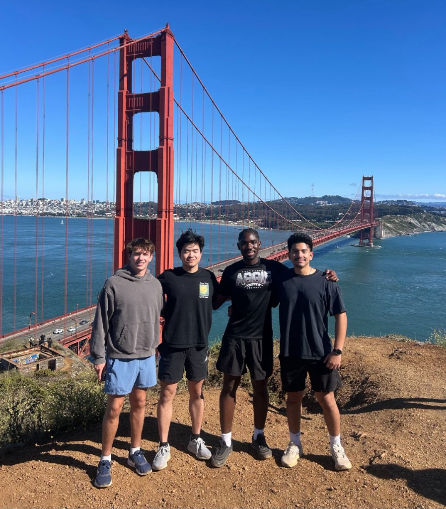

EY Digital Risk Internship
At EY, I worked inside the FSO Digital Risk practice, where the job was less about checking boxes and more about finding where the process broke.
Automation
Built an automated notification system in Power Automate that replaced manual deadline tracking for compliance tickets.
Vendor Risk
Evaluated third-party vendors against the firm's risk framework to surface control gaps.
Data Review
Worked through client control data to flag discrepancies before they reached review.
The pattern I kept returning to: understand why the process exists, then make it work better.
